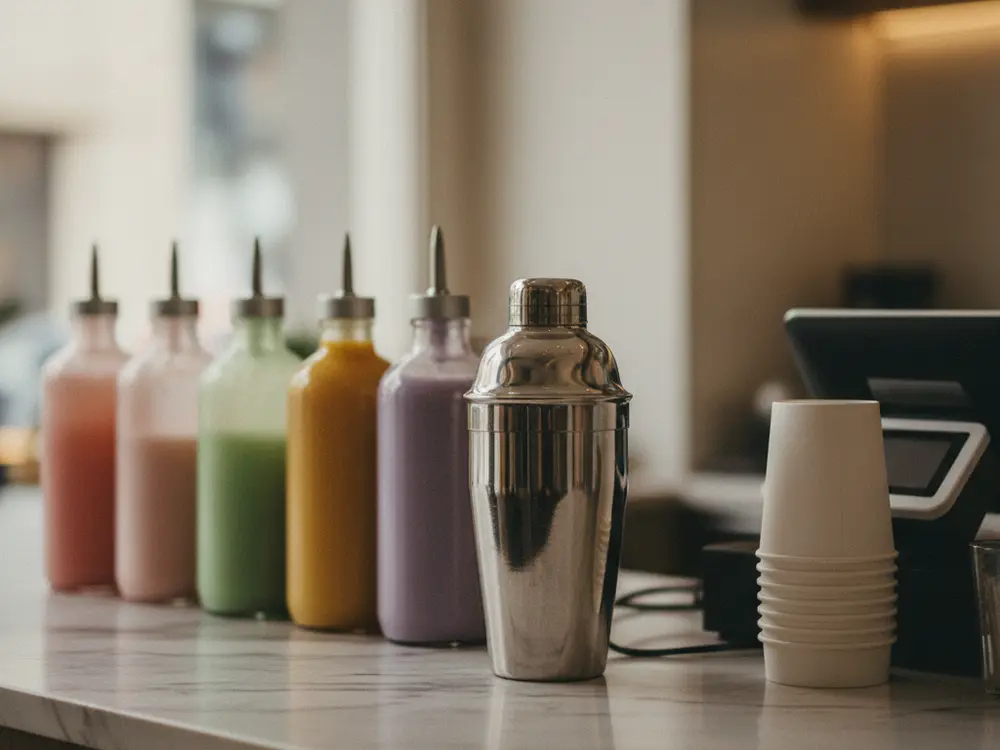
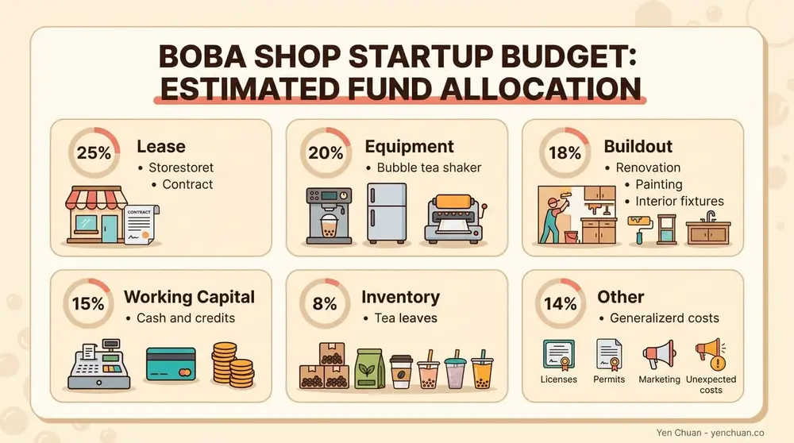
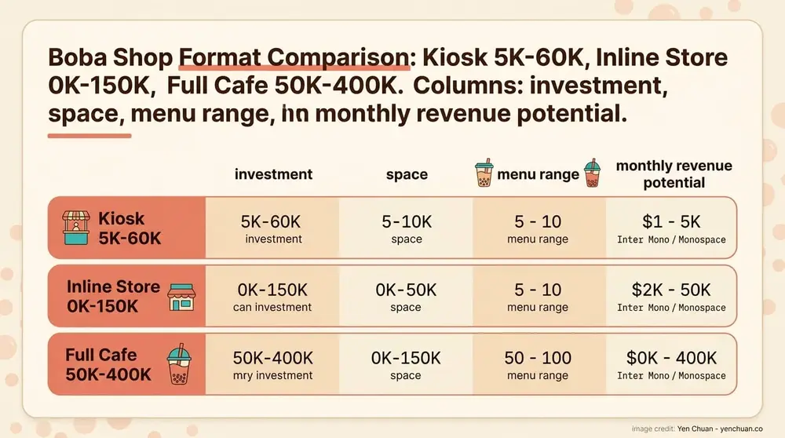

文章 / 經營與採購
Bubble Tea Shop Startup Costs: 2026 Budget Guide
這篇是英文原文，尚未完成繁體中文翻譯。中文選單與相關商品連結不會切回英文介面。

查看英文原文（尚未翻譯）
Opening a bubble tea shop requires careful financial planning. Location, format, and equipment quality drive the bulk of startup expenses. This guide breaks down realistic costs for 2026, helping aspiring owners budget accurately and avoid surprises.
Understanding the Total Investment
Bubble tea shop startup costs range widely based on location and format. A basic suburban operation costs $40,000 to $75,000. Mid-range urban shops cost $100,000 to $200,000. Premium locations with custom buildouts exceed $300,000 to $400,000+. These figures assume purchasing equipment rather than leasing.

The most expensive items typically include lease deposits, buildout costs, and equipment. Less obvious expenses—permits, training, working capital—often surprise new owners. Planning for contingencies (10-15% buffer) prevents cash flow crises during launch.
Lease and Rent: Your Largest Recurring Cost
Monthly rent represents your single biggest operating expense. Suburban locations run $1,500 to $3,500 monthly. Mid-sized cities average $2,000 to $5,000. Major urban centers exceed $5,000 to $8,000+ for premium high-traffic spaces. Some prime locations in NYC, LA, or San Francisco reach $10,000+ monthly.
Lease deposits typically equal 1-3 months of rent, due before opening. Negotiate terms aggressively—many landlords offer rent concessions during buildout phases. Some shops reduce overhead by starting in food courts, mall kiosks, or ghost kitchens ($800-2,000/month), then expanding to standalone locations.
Space requirements range from 200 square feet (kiosk) to 1,500 square feet (full café with seating). Calculate labor efficiency: smaller spaces limit peak-hour capacity but reduce staffing needs.
Equipment: From Basic to Premium
Equipment costs vary dramatically by quality and automation level. Basic setups cost $8,000 to $15,000. Mid-range complete packages run $15,000 to $30,000. Premium automated systems reach $40,000 to $70,000+.
Essential equipment includes: - Cup sealing machines: $2,000 to $5,000 - Commercial-grade refrigerators: $2,000 to $4,000 - Tea brewing stations: $1,500 to $3,000 - Blenders and shakers: $500 to $2,000 - Ice makers: $1,500 to $3,000 - Fructose/syrup dispensers: $800 to $2,000 - POS system: $1,500 to $5,000
Leasing rather than buying reduces upfront costs to $300-800 monthly. Consider second-hand equipment for non-critical items, but never compromise on sealing machines or refrigeration—these directly affect product quality and food safety.
Initial Inventory: Ingredients and Supplies
Quality powders, syrups, toppings, and tea leaves form the foundation of your product. Initial inventory costs $2,000 to $8,000 depending on menu complexity.
Budget breakdown: - Premium tea leaves: $800 to $2,000 - Powders and flavor bases: $500 to $1,500 - Syrups and sweeteners: $300 to $800 - Tapioca pearls and toppings: $400 to $1,200 - Cups, straws, and packaging: $300 to $1,500 - Backup stock and variety: $300 to $1,000
Start conservative—order smaller quantities at premium prices rather than over-investing in inventory that might spoil. As sales volume stabilizes, negotiate volume discounts with suppliers. Many shops discover their actual top-selling drinks within the first 4-6 weeks and adjust inventory accordingly.
Interior Buildout and Design
Interior costs depend dramatically on location condition and design ambition. Basic cosmetic updates (paint, flooring, signage) cost $2,000 to $8,000. Moderate renovations cost $10,000 to $25,000. Complete buildouts in raw commercial spaces reach $30,000 to $80,000+.
Key items: - Flooring and paint: $2,000 to $8,000 - Custom counter/bar: $3,000 to $10,000 - Shelving and display: $1,000 to $3,000 - Signage and branding: $1,500 to $5,000 - Seating and furniture (if café): $2,000 to $8,000 - HVAC and ventilation: $2,000 to $6,000 - Lighting and electrical: $1,500 to $5,000
Seek spaces with existing food-service infrastructure. Basements, storefronts with prior restaurant use, and strip mall units typically cost less to buildout. High-end custom designs signal premium positioning but rarely drive proportional revenue increases.
Permits, Licenses, and Legal Costs
Food service permits, business licenses, health inspections, and legal setup cost $1,500 to $5,000 depending on jurisdiction. Some states add significant complexity.
Expected costs: - Business license and registration: $300 to $800 - Food service license: $500 to $2,000 - Health department permits: $300 to $1,500 - Building permits (if renovating): $500 to $3,000+ - Legal entity setup and taxes: $500 to $1,500 - Insurance (liability and general): $800 to $2,000 annually
Timing matters—permits often take 4-8 weeks. Apply early to avoid launch delays. Budget for re-inspections and corrections, which are common during first compliance checks.
POS Systems and Technology
Modern bubble tea shops need point-of-sale systems, online ordering, and payment processing. Costs range from $1,500 to $5,000 for setup plus $50-300 monthly for software.
Setup includes: - POS hardware (tablet/register): $500 to $1,500 - Software and integrations: $500 to $2,000 - WiFi and internet: $200 to $500 - Delivery platform integrations: $200 to $800 - Monthly processing fees: 2-3.5% of transactions
Skip expensive systems unless you plan multiple locations. Most single shops succeed with mid-range tablet-based systems that integrate with Stripe, Square, or Toast.
Marketing and Launch Promotion
First impressions drive long-term success. Initial marketing budgets typically range from $2,000 to $8,000.
Allocation strategy: - Social media content creation: $500 to $2,000 - Influencer partnerships and launch events: $1,000 to $3,000 - Paid ads (Google, Instagram, TikTok): $800 to $2,000 - Printed materials and signage: $300 to $1,000 - Grand opening promotions/discounts: $500 to $1,500
Prioritize Instagram and TikTok—visual platforms drive boba shop discovery. Plan a 2-4 week soft opening to refine operations and train staff before the official launch.
Staffing and Training
Quality staff execution separates successful shops from forgettable ones. Initial training budgets typically cost $1,500 to $4,000.
Investment areas: - Training program development: $500 to $1,500 - Hands-on instruction and SOPs: $500 to $1,000 - Recipe testing and refinement: $300 to $800 - Initial payroll during training period: $300 to $1,000+
Hire 4-6 people for a small shop. Plan for turnover—bubble tea shops often have 40-60% annual staff turnover. Invest in systems and documentation that reduce training time for replacements.
Working Capital: The Safety Buffer
Many shops fail due to insufficient working capital, not failed business models. Budget for 3-6 months of operating expenses before achieving cash flow positive status.
Essential costs: - Monthly payroll: $4,000 to $12,000 - Utilities and rent: $2,000 to $6,000 - Supplies and inventory replenishment: $1,500 to $4,000 - Marketing and promotions: $500 to $1,500 - Equipment maintenance and repairs: $300 to $800
Conservative owners set aside $20,000 to $40,000+ specifically as working capital. This buffer prevents panic decisions when sales fluctuate seasonally or when equipment needs repair.
Format Comparison: Kiosk vs. Inline vs. Café

Kiosk Format (200-400 sq ft) - Startup cost: $25,000 to $60,000 - Monthly rent: $800 to $2,500 - Equipment: Basic, limited menu - Best for: First-time owners, high foot traffic areas (malls, food courts) - Pros: Low overhead, quick scale-up to second location - Cons: Limited seating, no differentiation opportunity
Inline Store (400-800 sq ft) - Startup cost: $60,000 to $150,000 - Monthly rent: $2,000 to $5,000 - Equipment: Full standard setup - Best for: Established entrepreneurs with operating experience - Pros: Better margins, customizable space, local brand building - Cons: Higher rent, more staff needed, slower ROI
Full Café (1,000-1,500+ sq ft) - Startup cost: $150,000 to $400,000+ - Monthly rent: $5,000 to $15,000+ - Equipment: Premium, diverse menu capability - Best for: Proven operators with capital, high-traffic premium locations - Pros: Seating revenue, food upsells, Instagram-worthy atmosphere - Cons: Highest risk, longest ROI timeline, complex operations
Most successful single-location owners start with inline stores—the sweet spot between manageable startup costs and viable operational flexibility.
Regional Cost Variations
Startup costs vary dramatically by location. Secondary cities offer 20-40% savings versus major metros. Midwest towns cost $60,000-120,000 total. East Coast urban areas run $150,000-300,000. West Coast premium markets exceed $300,000.
Factor in labor costs when evaluating locations. High minimum wage areas (California, New York) push labor to 30-35% of revenue. Lower minimum wage states allow 20-25% labor ratios, significantly improving profitability.
Timeline and Phased Budgeting
Most shops take 6-12 months from concept to opening. Phased spending reduces financial pressure.
Typical timeline: - Months 1-2: Research, location scouting, planning ($2,000-5,000) - Months 3-4: Lease negotiation, permits, equipment ordering ($15,000-40,000) - Months 5-6: Buildout, equipment installation, staff hiring ($20,000-60,000) - Months 7-8: Staff training, inventory, soft opening ($8,000-15,000) - Month 9: Grand opening and initial operations ($5,000-10,000)
This spread prevents depleting your entire budget before day one, preserving working capital for unexpected costs.
Red Flags and Budget Killers
Common overspending mistakes include: - Designer custom buildouts instead of functional spaces (unnecessary $20,000+ cost) - Equipment overkill beyond your sales projections (wasted $10,000-30,000) - Excessive initial inventory with low velocity items (ties up $3,000-8,000) - Hiring too many staff before revenue stabilizes (cost overruns of 30-50%) - Launch marketing without post-launch customer retention strategy (wasted spend)
Track every expense during planning. The difference between $80,000 and $150,000 startups often comes from controlled spending, not lower-cost markets.
Location Scout Essentials
Your location choice determines both cost and revenue potential. Evaluate: - Foot traffic patterns (observe peak hours, daily counts) - Demographic alignment (college areas, young professionals, families) - Competition density (underserved vs. saturated markets) - Lease flexibility and buildout allowances - Parking and public transportation access
High-rent premium locations only work at 2,000+ transactions monthly. Calculate break-even transaction count based on average order value ($6-8) and estimated daily volume. If monthly rent is $5,000, you need 625+ transactions monthly at $8 ATV to justify rent alone.
Implementation Strategy
Start by validating your location hypothesis. Spend $200-500 on a weekend market test or pop-up activation. Track transaction counts and average order values—this real data beats projections. Use results to refine your business case before committing major capital.
Next, build relationships with 2-3 equipment suppliers and negotiate aggressively. Many offer discounts (10-20%) for cash payment or first-time buyers. Get competing quotes for every major item.
Finally, secure your location before ordering equipment. Lease terms, buildout timelines, and utility infrastructure affect equipment selection and installation costs. Avoid overcommitting to equipment before finalizing your space.
Moving Forward
Starting your own bubble tea business? Yen Chuan offers a complete one-stop solution — from ingredients and equipment to recipes and training. Contact us to get started.
About Yen Chuan
Yen Chuan has been at the heart of Taiwan's bubble tea industry for over 20 years, supplying premium powders, syrups, tapioca pearls, and tea leaves to thousands of boba shops worldwide. With an in-house R&D lab and a commitment to quality ingredients, Yen Chuan is more than a supplier — we're your partner in the boba business. Understanding startup costs is crucial for new shop owners, and we've guided hundreds of entrepreneurs through the financial planning phase with expert advice and flexible supply partnerships.
Frequently Asked Questions
How much money do I need to open a bubble tea shop?
Most bubble tea shops require $50,000 to $150,000 in startup capital. Budget depends heavily on location, shop format (kiosk vs. full café), and equipment quality. Conservative estimates include 3-6 months of working capital alongside initial setup costs. Suburban locations with basic equipment start at $40,000-60,000, while premium urban cafés exceed $300,000.
What are the highest startup costs for a bubble tea shop?
Lease deposits, buildout/renovation, and commercial equipment represent the largest expenses. Lease deposits (1-3 months rent) can reach $10,000-30,000 in premium locations. Full interior buildouts cost $30,000-80,000+. Equipment packages range $15,000-70,000 depending on automation and quality.
Can I open a bubble tea shop for $30,000?
Technically possible but risky. A $30,000 budget typically covers basic equipment ($10,000), 2-3 months rent deposit ($4,000-8,000), initial inventory ($2,000-4,000), and minimal working capital ($6,000-8,000). This leaves no buffer for permits, training, marketing, or unexpected repairs. Most successful shops require $50,000+ minimum.
What format requires the lowest startup investment?
Kiosk format (mall, food court, or airport) costs $25,000-60,000—the lowest barrier to entry. Inline stores cost $60,000-150,000. Full cafés exceed $150,000-400,000+. Kiosks trade upfront cost savings for limited menu customization and seating revenue. Many owners start as kiosks, prove the concept, then open traditional locations.
How long until a bubble tea shop becomes profitable?
Most shops reach cash flow positive status in 12-18 months with solid unit economics and adequate working capital. Break-even timeline depends on daily transaction volume, average order value ($6-8), and monthly overhead. A $5,000/month rent location needs roughly 625-830+ daily transactions to break even on rent alone. Conservative owners budget for 6-month payback of initial investment, planning for 18-24 month full profitability including equity return.
Authority Sources
- MenuSifu: How to Open a Bubble Tea Shop in 2025 — Startup Guide & Full Cost Breakdown
- Financial Models Lab: Bubble Tea Shop Startup Costs — $350K to $760K Budget
- Toast: How Much Does It Cost to Open a Boba Shop? (2025 Boba Shop Startup Costs)
- BusinessDojo: Boba Tea Startup Costs Complete Guide 2026
- INFI: How Much Does It Cost To Open a Boba Shop?